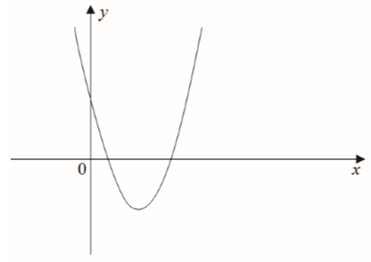
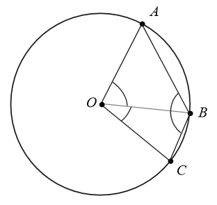
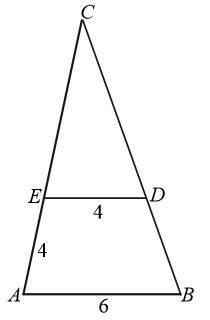
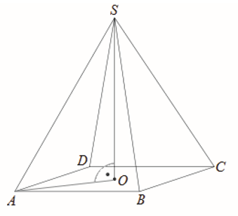
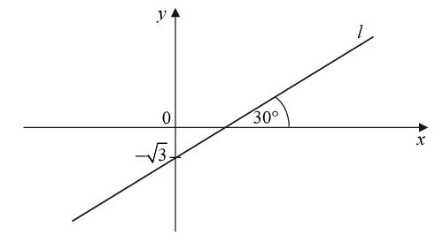
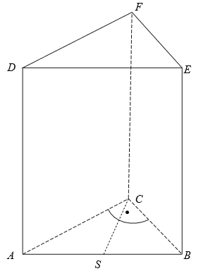

Matura 2017 sierpień
Niech \(a=-2\), \(b=3\). Wartość wyrażenia \(a^b-b^a\) jest równa
A.\( \frac{73}{9} \)
B.\( \frac{71}{9} \)
C.\( -\frac{73}{9} \)
D.\( -\frac{71}{9} \)
C
Liczba \(9^9\cdot 81^2\) jest równa
A.\( 81^4 \)
B.\( 81 \)
C.\( 9^{13} \)
D.\( 9^{36} \)
C
Wartość wyrażenia \(\log_48+5\log_42\) jest równa
A.\( 2 \)
B.\( 4 \)
C.\( 2+\log_45 \)
D.\( 1+\log_410 \)
B
Dane są dwa koła. Promień pierwszego koła jest większy od promienia drugiego koła o
\(30\%\). Wynika stąd, że pole pierwszego koła jest większe od pola drugiego koła
A.o mniej niż \(50\%\), ale więcej niż \(40\%\).
B.o mniej niż \(60\%\), ale więcej niż \(50\%\).
C.dokładnie o \(60\%\).
D.o więcej niż \(60\%\).
D
Liczba (\(2\sqrt{7}-5)^2\cdot (2\sqrt{7}+5)^2 \) jest równa
A.\( 9 \)
B.\( 3 \)
C.\( 2809 \)
D.\( 28-20\sqrt{7} \)
A
Wskaż rysunek, na którym jest przedstawiony zbiór wszystkich liczb \(x\)
spełniających warunek: \(11\le 2x-7\le 15\). 
D
Rozważmy treść następującego zadania:
Obwód prostokąta o bokach długości \(a\) i \(b\) jest równy \(60\). Jeden z boków tego prostokąta jest o \(10\) dłuższy od drugiego. Oblicz długości boków tego prostokąta.
Który układ równań opisuje zależności między długościami boków tego prostokąta?
Obwód prostokąta o bokach długości \(a\) i \(b\) jest równy \(60\). Jeden z boków tego prostokąta jest o \(10\) dłuższy od drugiego. Oblicz długości boków tego prostokąta.
Który układ równań opisuje zależności między długościami boków tego prostokąta?
A.\( \begin{cases} 2(a+b)=60 \\ a+10=b \end{cases} \)
B.\( \begin{cases} 2a+b=60 \\ 10b=a \end{cases} \)
C.\( \begin{cases} 2ab=60 \\ a-b=10 \end{cases} \)
D.\( \begin{cases} 2(a+b)=60 \\ 10a=b \end{cases} \)
A
Rozwiązaniem równania \(\frac{x+1}{x+2}=3\), gdzie \(x\ne -2\), jest liczba
należąca do przedziału
A.\( (-2,1) \)
B.\( \langle 1,+\infty ) \)
C.\( (-\infty ,-5) \)
D.\( \langle -5,-2) \)
D
Linę o długości \(100\) metrów rozcięto na trzy części, których długości pozostają
w stosunku \(3:4:5\). Stąd wynika, że najdłuższa z tych części ma długość
A.\( 41\frac{2}{3} \) metra.
B.\( 33\frac{1}{3} \) metra.
C.\( 60 \) metrów.
D.\( 25 \) metrów.
A
Na rysunku przedstawiono fragment wykresu funkcji kwadratowej \(f\) określonej
wzorem \(f(x)=x^2+bx+c\). 
Współczynniki \(b\) i \(c\) spełniają warunki:
A.\( b\lt 0, c\gt 0 \)
B.\( b\lt 0, c\lt 0 \)
C.\( b\gt 0, c\gt 0 \)
D.\( b\gt 0, c\lt 0 \)
A
Dany jest ciąg arytmetyczny \((a_n)\), określony dla \(n\ge 1\), o którym wiemy,
że: \(a_1=2\) i \(a_2=9\). Wtedy \(a_n=79\) dla
A.\( n=10 \)
B.\( n=11 \)
C.\( n=12 \)
D.\( n=13 \)
C
Dany jest trzywyrazowy ciąg geometryczny o wyrazach dodatnich: \((81, 3x, 4)\).
Stąd wynika, że
A.\( x=18 \)
B.\( x=6 \)
C.\( x=\frac{85}{6} \)
D.\( x=\frac{6}{85} \)
B
Kąt \(\alpha\) jest ostry i spełniona jest równość \(\sin \alpha
=\frac{2\sqrt{6}}{7}\). Stąd wynika, że
A.\( \cos \alpha =\frac{24}{49} \)
B.\( \cos \alpha =\frac{5}{7} \)
C.\( \cos \alpha =\frac{25}{49} \)
D.\( \cos \alpha =\frac{5\sqrt{6}}{7} \)
B
Na okręgu o środku w punkcie \(O\) leżą punkty \(A\), \(B\) i \(C\) (zobacz
rysunek). Kąt \(ABC\) ma miarę \(121^\circ \), a kąt \(BOC\) ma miarę \(40^\circ \).  Kąt \(AOB\) ma miarę
A.\( 59^\circ \)
B.\( 50^\circ \)
C.\( 81^\circ \)
D.\( 78^\circ \)
D
W trójkącie \(ABC\) punkt \(D\) leży na boku \(BC\), a punkt \(E\) leży na boku
\(AC\). Odcinek \(DE\) jest równoległy do boku \(AB\), a ponadto \(|AE|=|DE|=4\), \(|AB|=6\) (zobacz
rysunek).  Odcinek \(CE\) ma
długość
A.\( \frac{16}{3} \)
B.\( \frac{8}{3} \)
C.\( 8 \)
D.\( 6 \)
C
Dany jest trójkąt równoboczny, którego pole jest równe \(6\sqrt{3}\). Bok tego
trójkąta ma długość
A.\( 3\sqrt{2} \)
B.\( 2\sqrt{3} \)
C.\( 2\sqrt{6} \)
D.\( 6\sqrt{2} \)
C
Punkty \(B=(-2,4)\) i \(C=(5,1)\) są sąsiednimi wierzchołkami kwadratu \(ABCD\).
Pole tego kwadratu jest równe
A.\( 29 \)
B.\( 40 \)
C.\( 58 \)
D.\( 74 \)
C
Na rysunku przedstawiono ostrosłup prawidłowy czworokątny \(ABCDS\) o podstawie
\(ABCD\).  Kąt nachylenia
krawędzi bocznej \(SA\) ostrosłupa do płaszczyzny podstawy \(ABCD\) to
A.\( \sphericalangle SAO \)
B.\( \sphericalangle SAB \)
C.\( \sphericalangle SOA \)
D.\( \sphericalangle ASB \)
A
Graniastosłup ma \(14\) wierzchołków. Liczba wszystkich krawędzi tego
graniastosłupa jest równa
A.\( 14 \)
B.\( 21 \)
C.\( 28 \)
D.\( 26 \)
B
Prosta \(k\) przechodzi przez punkt \(A=(4,-4)\) i jest prostopadła do osi \(Ox\).
Prosta \(k\) ma równanie
A.\( x-4=0 \)
B.\( x-y=0 \)
C.\( y+4=0 \)
D.\( x+y=0 \)
A
Prosta \(l\) jest nachylona do osi \(Ox\) pod kątem \(30^\circ \) i przecina oś
\(Oy\) w punkcie \((0,-\sqrt{3})\) (zobacz rysunek).  Prosta \(l\) ma równanie
A.\( y=\frac{\sqrt{3}}{3}x-\sqrt{3} \)
B.\( y=\frac{\sqrt{3}}{3}x+\sqrt{3} \)
C.\( y=\frac{1}{2}x-\sqrt{3} \)
D.\( y=\frac{1}{2}x+\sqrt{3} \)
A
Dany jest stożek o wysokości \(6\) i tworzącej \(3\sqrt{5}\). Objętość tego stożka
jest równa
A.\( 36\pi \)
B.\( 18\pi \)
C.\( 108\pi \)
D.\( 54\pi \)
B
Średnia arytmetyczna zestawu danych: \(x, 2, 4, 6, 8, 10, 12, 14\) jest równa
\(9\). Wtedy mediana tego zestawu danych jest równa
A.\( 8 \)
B.\( 9 \)
C.\( 10 \)
D.\( 16 \)
B
Ile jest wszystkich czterocyfrowych liczb naturalnych mniejszych niż \(2017\)?
A.\( 2016 \)
B.\( 2017 \)
C.\( 1016 \)
D.\( 1017 \)
D
Z pudełka, w którym jest tylko \(6\) kul białych i \(n\) kul czarnych, losujemy
jedną kulę. Prawdopodobieństwo wylosowania kuli białej jest równe \(\frac{1}{3}\). Liczba kul
czarnych jest równa
A.\( n=9 \)
B.\( n=2 \)
C.\( n=18 \)
D.\( n=12 \)
D
Rozwiąż nierówność \(2x^2+x-6\le 0\).
\(x\in \left\langle -2, \frac{3}{2} \right\rangle \)
Rozwiąż równanie \((x^2-6)(3x+2)=0\).
\(x=\sqrt{6} \lor x=-\sqrt{6} \lor x=-\frac{2}{3}\)
Udowodnij, że dla dowolnej dodatniej liczby rzeczywistej \(x\) prawdziwa jest
nierówność \[4x+\frac{1}{x}\ge 4.\]
Dany jest trójkąt prostokątny \(ABC\), w którym \(|\sphericalangle ACB|=90^\circ \)
i \(|\sphericalangle ABC|=60^\circ \). Niech \(D\) oznacza punkt wspólny wysokości poprowadzonej z
wierzchołka \(C\) kąta prostego i przeciwprostokątnej \(AB\) tego trójkąta. Wykaż, że
\(|AD|:|DB|=3:1\).
Ze zbioru liczb \(\{1,2,4,5,10\}\) losujemy dwa razy po jednej liczbie ze
zwracaniem. Oblicz prawdopodobieństwo zdarzenia \(A\) polegającego na tym, że iloraz pierwszej
wylosowanej liczby przez drugą wylosowaną liczbę jest liczbą całkowitą.
\(P(A)=\frac{12}{25}\)
Dany jest ciąg arytmetyczny \((a_n)\), określony dla \(n\ge 1\), w którym spełniona
jest równość \(a_{21}+a_{24}+a_{27}+a_{30}=100\). Oblicz sumę \(a_{25}+a_{26}\).
\(50\)
Funkcja kwadratowa \(f(x)=ax^2+bx+c\) ma dwa miejsca zerowe \(x_1=-2\) i \(x_2=6\).
Wykres funkcji \(f\) przechodzi przez punkt \(A=(1,-5)\). Oblicz najmniejszą wartość funkcji \(f\).
\(-\frac{16}{3}\)
Punkt \(C=(0,0)\) jest wierzchołkiem trójkąta prostokątnego \(ABC\), którego
wierzchołek \(A\) leży na osi \(Ox\), a wierzchołek \(B\) na osi \(Oy\) układu współrzędnych. Prosta
zawierająca wysokość tego trójkąta opuszczona z wierzchołka \(C\) przecina przeciwprostokątną \(AB\)
w punkcie \(D=(3,4)\).  Oblicz
współrzędne wierzchołków \(A\) i \(B\) tego trójkąta oraz długość przeciwprostokątnej \(AB\).
Oblicz
współrzędne wierzchołków \(A\) i \(B\) tego trójkąta oraz długość przeciwprostokątnej \(AB\).
Oblicz
współrzędne wierzchołków \(A\) i \(B\) tego trójkąta oraz długość przeciwprostokątnej \(AB\). \(A=\left(\frac{25}{3},0\right )\), \(B=\left(0,\frac{25}{4}\right )\),
\(|AB|=\frac{125}{12}\)
Podstawą graniastosłupa prostego \(ABCDEF\) jest trójkąt prostokątny \(ABC\), w
którym \(|\sphericalangle ACB=90^\circ |\) (zobacz rysunek). Stosunek długości przyprostokątnej
\(AC\) tego trójkąta do długości przyprostokątnej \(BC\) jest równy \(4:3\). Punkt \(S\) jest
środkiem okręgu opisanego na trójkącie \(ABC\), a długość odcinka \(SC\) jest równa \(5\). Pole
ściany bocznej \(BEFC\) graniastosłupa jest równe \(48\). Oblicz objętość tego graniastosłupa. 
\(V=192\)